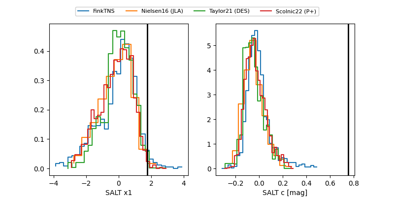

FINK: ZTF25abqicvg
Lasair: ZTF25abqicvg
ALeRCE: ZTF25abqicvg
TNS: 2025xll
YSE: 2025xll
ZTF25abqicvg (ztf,fink)
2025xll (tns,yse)
equatorial (ra, dec) = (261.1006,+44.93814)
galactic (l, b) = (70.6788,+33.75354)

last atlaso=18.82, ztfg=20.39, ztfr=19.11
3 atlaso, 1 ztfg, 3 ztfr detections